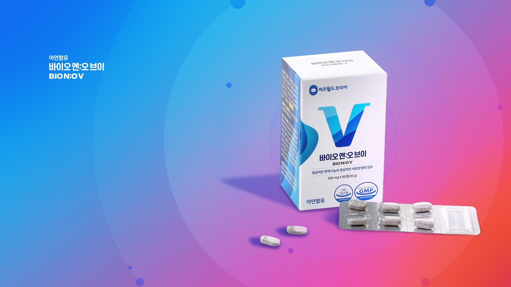
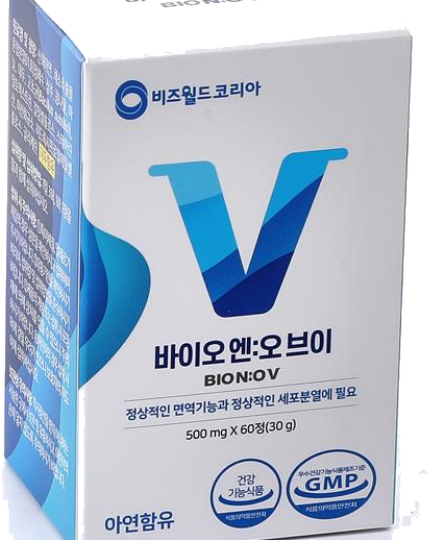

Nobel Prize
0Nitric oxide signalling won the Nobel Prize in Physiology or Medicine.
Clearing the way to optimum health. A third-generation nitric-oxide activator, born from patented microbial fermentation.

Nitric oxide (NO) is the body's master signalling molecule — it relaxes vessels, carries oxygen and defends every organ. Yet the older we get, the less we make.
Production begins to fall 20% every decade. By 40 we've lost half; by 60, up to 85%. People aged 50+ are far more likely to suffer nitric-oxide deficiency.
Source: CirculationIt is one of the body's signalling molecules, involved in the normal function of systems from head to toe.
Nitric oxide signalling won the Nobel Prize in Physiology or Medicine.
Produced naturally throughout the body as a signalling molecule.
Its signalling half-life is measured in seconds — the body remakes it constantly.
Natural production tends to decline as we age.
BIO N:OV is the exclusive third generation — microbial fermentation that leaves older methods behind.
Microbial fermentation
Ingredients 100% natural and safe.
Zero dependence, no restrictions.
Designed to begin releasing on contact with stomach acid.
Instantly releases NO on contact with stomach acid.

Fermented garlic & lettuce extracts, built on the latest microbial-strain technology to optimise your body in five ways.
Formulated to support normal, healthy blood flow.
Supports steady everyday energy as part of a balanced routine.
Supports the oxygen delivery your muscles rely on.
Part of a routine that supports healthy ageing.
Supports the healthy circulation that skin depends on.
A natural source of Vitamin A, Vitamin B and amino acids.
A long-studied culinary staple, valued for its naturally occurring allicin.
A natural source of β-Carotene and Vitamin C.
A natural source of vitamins, minerals and dietary fibre.
BIO N:OV is exclusively developed from a proprietary microbial strain (KACC91554P) owned by the Korea Research Institute of Bioscience and Biotechnology — a fermented composition of natural vegetables and herbs. GMP certified.
SunChon National University
Wonkwang University, School of Medicine — NO & Metabolites
Dean, Wonkwang University School of Medicine — Cardiovascular Health
Pusan National University — Neuro-Rehabilitation
Jeonbuk National University — Metabolism & Healthy Ageing
Exclusive @ Bzzworld. Begin your nitric-oxide journey with BIO N:OV.